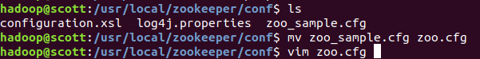
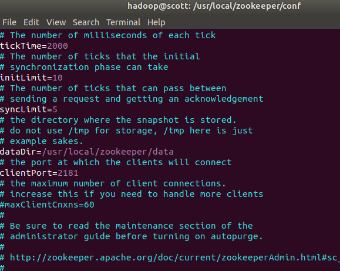
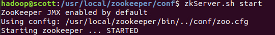
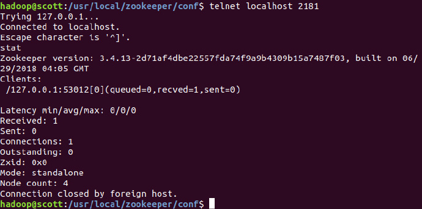
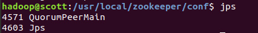
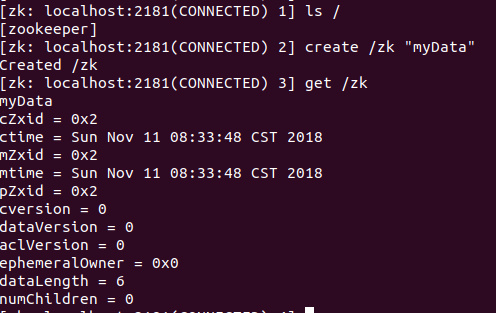
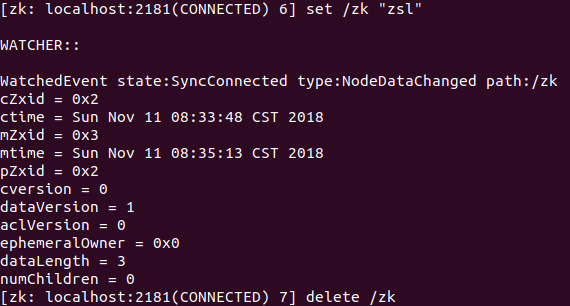
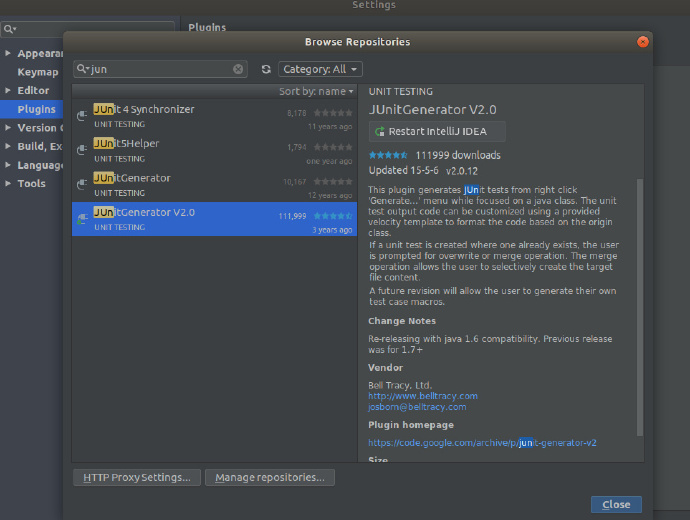
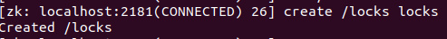
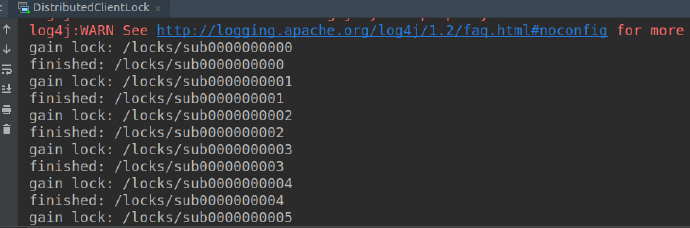

Zookeeper配置
下载zookeeper
首先在官网下载zookeeper：
wget http://mirror.bit.edu.cn/apache/zookeeper/zookeeper-3.4.13/zookeeper-3.4.13.tar.gz
解压：
sudo tar xzvf zookeeper-3.4.13.tar.gz -C /usr/local
设置权限：
chown -R hadoop:hadoop zookeeper
配置环境变量
export PATH=$PATH:/usr/local/zookeeper/bin
修改配置文件
重命名：
sudo mv zookeeper-3.4.13/ zookeeper
mv zoo_sample.cfg zoo.cfg
修改zoo.cfg：

可以改conf文件，创建多个端口-> 多个server：

启动zookeeper
zkServer.sh start

验证是否启动
telnet localhost 2181
输入start，若看到Zookeeper version则说明启动成功

输入jps看是否启动：

关闭zookeeper
zkServer.sh stop
Zookeeper命令行
参考这里。
进入命令行工具：
zkCli.sh -server
使用 ls 命令来查看当前 ZooKeeper 中所包含的内容：

下面我们通过 set 命令来对 zk 所关联的字符串进行设置：

下面我们将刚才创建的 znode 删除：
delete /zk
删除节点：
rmr /zk
编写Client程序
创建maven项目
修改pox.xml文件：
- 参考官方配置
修改为：
<?xml version="1.0" encoding="UTF-8"?>
<project xmlns="http://maven.apache.org/POM/4.0.0"
xmlns:xsi="http://www.w3.org/2001/XMLSchema-instance"
xsi:schemaLocation="http://maven.apache.org/POM/4.0.0 http://maven.apache.org/xsd/maven-4.0.0.xsd">
<modelVersion>4.0.0</modelVersion>
<groupId>Dase</groupId>
<artifactId>1</artifactId>
<version>1.0-SNAPSHOT</version>
<dependencies>
<dependency>
<groupId>org.apache.zookeeper</groupId>
<artifactId>zookeeper</artifactId>
<version>3.4.13</version>
</dependency>
<dependency>
<groupId>junit</groupId>
<artifactId>junit</artifactId>
<version>4.12</version>
<scope>test</scope>
</dependency>
</dependencies>
</project>
下载JUnitGenerator V2.0
在IDEA中，JUnit已经默认下载好，我们需要添加JUnitGenerator V2.0插件：

编写程序
import java.util.List;
import org.apache.zookeeper.*;
import org.apache.zookeeper.ZooDefs.Ids;
import org.apache.zookeeper.data.Stat;
public class Simple {
private static final String connectString = "localhost:2181";
private static final int sessionTimeout = 2000;
private ZooKeeper zkClient = null;
public void init() throws Exception {
zkClient = new ZooKeeper(connectString, sessionTimeout, new Watcher() {
@Override
public void process(WatchedEvent event) {
// 收到事件通知后的回调函数（应该是我们自己的事件处理逻辑）
System.out.println(event.getType() + "---" + event.getPath());
try {
zkClient.getChildren("/", true);
} catch (Exception e) {
}
}
});
}
/**
* 数据的增删改查
*
* @throws InterruptedException
* @throws KeeperException
*/
// 创建数据节点到zk中
public void Create() throws KeeperException, InterruptedException {
// 参数1：要创建的节点的路径 参数2：节点大数据 参数3：节点的权限 参数4：节点的类型
String nodeCreated = zkClient.create("/scott", "hellozk".getBytes(), Ids.OPEN_ACL_UNSAFE, CreateMode.PERSISTENT);
//上传的数据可以是任何类型，但都要转成byte[]
}
//判断znode是否存在
public void Exist() throws Exception{
Stat stat = zkClient.exists("/scott", false);
System.out.println(stat==null?"not exist":"exist");
}
// 获取子节点
public void getChildren() throws Exception {
List<String> children = zkClient.getChildren("/", true);
for (String child : children) {
System.out.println(child);
}
Thread.sleep(Long.MAX_VALUE);
}
//获取znode的数据
public void getData() throws Exception {
byte[] data = zkClient.getData("/scott", false, null);
System.out.println(new String(data));
}
//删除znode
public void deleteZnode() throws Exception {
//参数2：指定要删除的版本，-1表示删除所有版本
zkClient.delete("/eclipse", -1);
}
//删除znode
public void setData() throws Exception {
zkClient.setData("/scott", "imissyou angelababy".getBytes(), -1);
byte[] data = zkClient.getData("/scott", false, null);
System.out.println(new String(data));
}
}
Junit
使用Junit进行单元测试，这里首先需要创建测试类：
使用快捷键alt+insert：

会自动在test中创建同名文件：

修改该文件：
package test;
import org.apache.zookeeper.*;
import org.apache.zookeeper.data.Stat;
import org.junit.Test;
import org.junit.Before;
import org.junit.After;
import java.util.List;
/**
* Simple Tester.
*
* @author <Authors name>
* @since <pre>Nov 11, 2018</pre>
* @version 1.0
*/
public class SimpleTest {
private static final String connectString = "localhost:2181";
private static final int sessionTimeout = 2000;
private ZooKeeper zkClient = null;
@Before
public void testInit() throws Exception {
zkClient = new ZooKeeper(connectString, sessionTimeout, new Watcher() {
@Override
public void process(WatchedEvent event) {
// 收到事件通知后的回调函数（应该是我们自己的事件处理逻辑）
System.out.println(event.getType() + "---" + event.getPath());
try {
zkClient.getChildren("/", true);
} catch (Exception e) {
}
}
});
String nodeCreated = zkClient.create("/scott", "hellozk".getBytes(), ZooDefs.Ids.OPEN_ACL_UNSAFE, CreateMode.PERSISTENT);
}
/**
*
* Method: Exist()
*
*/
@Test
public void testExist() throws Exception {
Stat stat = zkClient.exists("/scott", false);
System.out.println(stat==null?"not exist":"exist");
}
/**
*
* Method: getChildren()
*
*/
@Test
public void testGetChildren() throws Exception {
List<String> children = zkClient.getChildren("/", true);
for (String child : children) {
System.out.println(child);
}
// Thread.sleep(Long.MAX_VALUE);
}
/**
*
* Method: getData()
*
*/
@Test
public void testGetData() throws Exception {
byte[] data = zkClient.getData("/scott", false, null);
System.out.println(new String(data));
}
/**
*
* Method: deleteZnode()
*
*/
@Test
public void testDeleteZnode() throws Exception {
zkClient.delete("/scott", -1);
}
/**
*
* Method: setData()
*
*/
@Test
public void testSetData() throws Exception {
zkClient.setData("/scott", "imissyou angelababy".getBytes(), -1);
byte[] data = zkClient.getData("/scott", false, null);
System.out.println(new String(data));
}
}
其中，@Before表示在测试前运行，注意，JUnit不能指定@test运行顺序，如果非要指定，需要对函数名进行重新命名，具体参考这里
测试
对每个函数进行测试：
如：对Exist函数进行测试：

直到每个函数通过为止
体会分布式共享锁的实现
编写程序
在src/main/java下创建DistributedClientLock：
import java.util.Collections;
import java.util.List;
import java.util.Random;
import org.apache.zookeeper.CreateMode;
import org.apache.zookeeper.WatchedEvent;
import org.apache.zookeeper.Watcher;
import org.apache.zookeeper.Watcher.Event.EventType;
import org.apache.zookeeper.ZooDefs.Ids;
import org.apache.zookeeper.ZooKeeper;
public class DistributedClientLock {
// 会话超时
private static final int SESSION_TIMEOUT = 2000;
// zookeeper集群地址
private String hosts = "localhost:2181";
private String groupNode = "locks";
private String subNode = "sub";
private boolean haveLock = false;
private ZooKeeper zk;
// 记录自己创建的子节点路径
private volatile String thisPath;
/**
* 连接zookeeper
*/
private void connectZookeeper() throws Exception {
zk = new ZooKeeper(hosts, SESSION_TIMEOUT, new Watcher() {
public void process(WatchedEvent event) {
try {
// 判断事件类型，此处只处理子节点变化事件
if (event.getType() == EventType.NodeChildrenChanged && event.getPath().equals("/" + groupNode)) {
//获取子节点，并对父节点进行监听
List<String> childrenNodes = zk.getChildren("/" + groupNode, true);
String thisNode = thisPath.substring(("/" + groupNode + "/").length());
// 去比较是否自己是最小id
Collections.sort(childrenNodes);
if (childrenNodes.indexOf(thisNode) == 0) {
//访问共享资源处理业务，并且在处理完成之后删除锁
doSomething();
//重新注册一把新的锁
thisPath = zk.create("/" + groupNode + "/" + subNode, null, Ids.OPEN_ACL_UNSAFE,
CreateMode.EPHEMERAL_SEQUENTIAL);
}
}
} catch (Exception e) {
e.printStackTrace();
}
}
});
// 1、程序一进来就先注册一把锁到zk上
thisPath = zk.create("/" + groupNode + "/" + subNode, null, Ids.OPEN_ACL_UNSAFE,
CreateMode.EPHEMERAL_SEQUENTIAL);
// wait一小会，便于观察
Thread.sleep(new Random().nextInt(1000));
// 从zk的锁父目录下，获取所有子节点，并且注册对父节点的监听
List<String> childrenNodes = zk.getChildren("/" + groupNode, true);
//如果争抢资源的程序就只有自己，则可以直接去访问共享资源
if (childrenNodes.size() == 1) {
doSomething();
thisPath = zk.create("/" + groupNode + "/" + subNode, null, Ids.OPEN_ACL_UNSAFE,
CreateMode.EPHEMERAL_SEQUENTIAL);
}
}
/**
* 处理业务逻辑，并且在最后释放锁
*/
private void doSomething() throws Exception {
try {
System.out.println("gain lock: " + thisPath);
Thread.sleep(2000);
// do something
} finally {
System.out.println("finished: " + thisPath);
//释放锁
zk.delete(this.thisPath, -1);
}
}
public static void main(String[] args) throws Exception {
DistributedClientLock dl = new DistributedClientLock();
dl.connectZookeeper();
Thread.sleep(Long.MAX_VALUE);
}
}
运行
首先需要在命令行中创建Znode：
create /locks locks

然后运行程序，程序会拿到锁、释放锁不停交替运行：
